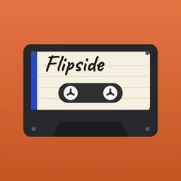
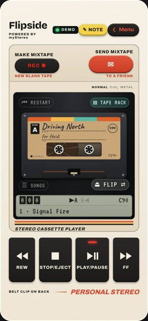

Alpha tester · Quick Start · Flipside 1.6.3
You’re one of the first people making mixtapes on Flipside. Five minutes gets you from nothing to a tape in a friend’s hands. Then tell BC what happened.

iPhone: open ownyourmedia.club/flipside/app in Safari, tap Share, then Add to Home Screen. Android: open it in Chrome, tap ⋮, then Add to Home screen or Install app. On a computer, just open the link.
On the deck, tap Menu, then Settings › Your Music › Plex. No Plex handy? Choose Demo Library and try everything with sample songs.
Press REC, then + New Tape. Name it, pick a C60 or C90, and add songs to Side A and Side B. When a side is full, it’s full. Want help? Plan it first with the Coach.
New tapes stay on your bench until they’re done. Open the Tape tab, check the list and press Send to the Rack.
STOP/EJECT opens your tape rack. Tap a tape to lift it out, press LOAD TAPE, then PLAY. Hold REW or FF to wind. FLIP turns it over; ⏮ RESTART goes back to the start of the side.
Press SEND MIXTAPE on the deck. They hear it from your music, so share your Plex library with them first.
Press ✎ NOTE on the deck any time something breaks, gives you an idea or makes you smile. Write a line and press SEND NOW, or save it and later use Menu › Alpha › Notepad › Send All to BC. Alpha › What to Test lists what BC most wants to hear about.
Broken, confusing, too small, or just right: all of it helps. No mail app? Write to bc@runawayanchor.com.